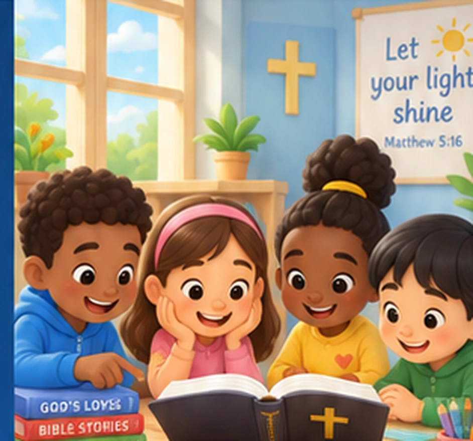

A YEAR IN GOD'S WORD · 2026Read together.
Read together.
Pray together.
Grow together.
365 days of scripture reading, rich family reflections, prayer, memory verses and practical faith at home.

365Daily reflections
12Monthly sections
5Family learning elements
1Shared journey of faith
TODAY'S READING
Your daily family devotion
Choose any date in 2026 and discover that day's reflection.
Loading today’s family devotion…
365-day reading calendar
Browse by month. Each date opens that day’s scripture reading, reflection, prayer, memory verse and family activity.
FAMILY FAITH AT HOME
Small moments. Meaningful conversations.
Every devotional offers a Bible reading, a family reflection, a focus point, prayers, a memory verse and a hymn suggestion, with age-specific discussion and a practical activity.
This is a reading platform. There is no bulk-export or book download feature on this website.